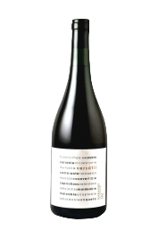

PASION Y VINOS
En la pintoresca ciudad Villa del Dique, Córdoba, Argentina, se encuentra la vinoteca Pasión y Vinos, un lugar donde la pasión por el vino se manifiesta en cada detalle. Sus fundadores, Daniel Alonso y Analía Etcheverry ingenieros agrónomos y músicos apasionados por los tintos, blancos y espumantes. Aunque también se dedica a componer música para películas, la administración de la vinoteca es su verdadera pasión.

Vino Tinto cabernet franc Versatil 750 ml
NUEVO

Vino Tinto Merlot Versatil Merlot de garage 750 ml
NUEVO

Vino Tinto Versatil naranjo de garage 750 ml
NUEVO